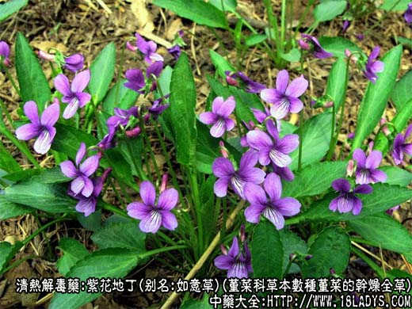
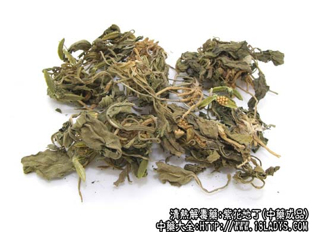
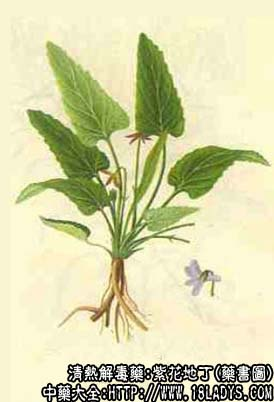

本品为常用中药，原名“紫花地丁”，始载《本草纲目》。市售商品植物来源复杂，主要有三大类：一为罂粟科植物地丁操（紫堇或布氏紫堇）习称苦地丁京津地区习用。另一类为豆科植物米口袋及其同属数种植物，习称甜地丁。再一类为堇菜科植物辽堇菜、犁头草、白花地丁等数种同科植物，习称紫花地丁，后两种全国应用较广。
1、地丁草
别名：苦地丁，紫花地丁（京津）。
来源：为罂粟科一年生或二年生草本植物地丁草的干燥全草。多为栽培。
产地：主产于河北，山东、山西、辽宁等省。
植物形态：细弱草本，茎高10～30厘米。多分支，具棱脊。基叶根生，茎叶互生，有长柄，2回羽状全裂，裂片线形，灰绿色。花腋生，总状花序，花瓣四片，紫红色。蒴果扁平长长椭圆形，内含数枚短肾形黑色或棕黑色有光亮的种子。
性状鉴别：全草，皱缩卷曲成团状。叶片多碎断，全体呈绿色或灰绿色。蒴果夹果状。黑色种子多散存于碎叶之间。气青草味，味苦而持久。
以枝叶青绿色，无杂质者为佳。
主要成分：含生物碱、香豆素等。
药理作用：清热、消肿、消炎。体外试验对痢疾杆菌、金黄色葡萄球菌、肺炎球菌、皮肤真菌有抑制作用。
炮制：切咀，生用。
性味：苦、辛、寒。
归经：入心、肝经。
功能：清热解毒，凉血消肿。
主治：痈疽发背，疔疮肿毒，麻疹热毒。
临床应用：为治疗疮疖常用药，尤其适用于头面部和背部的疖肿，配蒲公英、菊花、银花等，方如五味消毒饮。
用量：复方中用9～15g，单味用30～60g。
处方举例：五味消毒饮《医宗金鉴》：紫花地丁15g、蒲公英15g、银花15g、野菊花9g、紫背天葵9g，水煎服，如能加一匙姜白酒冲服更好。
2、米口袋
别名：甜地丁。
来源：为豆科植物多年生草本米口袋及其同属数种植物的干燥根或带根的全草，均野生。
产地：主产于中南、华北、东北等地区全国各地均有分布。
性状鉴别：主根圆锥形略似鼠尾，长10～20厘米，直径0.3～1厘米，有分歧。表面黄棕色，质坚韧，不易折断。断面纤维性，黄白色。根头上有多数基生叶，叶柄细长，直径约1毫米，长约15厘米，叶为羽状复叶，小叶片椭圆形。荚果圆筒形内含小米粒样种子，多枚（故名米口袋）。全株密被灰白色柔毛呈灰绿色。气微青草臭，味微甜。
以根条粗壮灰绿色者为佳，河南、山东、湖北等省有些地区只用根不用地上部分。
3、堇菜科地丁
别名：紫花地丁、如意草（京津）。
来源：为堇菜科多年生草本植物。辽堇菜、犁头草、白花地丁、香堇、长萼堇菜等数种植物的干燥全草。均为野生。
产地：主产于华东、中南等地区，全国各地均有分布。
性状鉴别：全草，多皱缩卷曲，成不规则的团状，主根3～5厘米，直径1～3毫米，多分歧，土黄色。地上部分绿色或黄绿色，叶根基丛生，叶柄细长达5厘米，叶片皱缩，展开后长3～5厘米，宽约1～3厘米，长卵形或三角形等多种形式，边缘具钝锯齿，被灰白色柔毛或无毛。花茎细长顶端常具三裂蒴果，内含长圆球形淡黄棕色种子多枚。茎叶质脆易碎。气微臭，味苦而涩稍粘。
以茎叶整齐，黄绿色，无杂质者为佳。
注：1、据中药志和中药鉴别手册记载还有些地区如内蒙用豆科山野豌豆的地上部分作紫花地丁。浙江、云南、安徽滁县等地，以远志科植物瓜子金称竹叶地丁。广东、广西以龙胆科植物华南龙胆称广地丁，四川以龙胆科植物石龙胆作地丁用，而陕西、四川部分地区以菊科植物蒲公英全草称黄花地丁。这些地丁应结合地区习用，注意鉴别。
2、以上多种地丁科属不同，形味各异，均作地丁药用，效用是否相同应加研究。